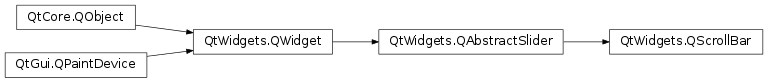

QScrollBar¶
Synopsis¶
Functions¶
- def
initStyleOption(option)
Detailed Description¶
The
PySide2.QtWidgets.QScrollBarwidget provides a vertical or horizontal scroll bar.A scroll bar is a control that enables the user to access parts of a document that is larger than the widget used to display it. It provides a visual indication of the user’s current position within the document and the amount of the document that is visible. Scroll bars are usually equipped with other controls that enable more accurate navigation. Qt displays scroll bars in a way that is appropriate for each platform.
If you need to provide a scrolling view onto another widget, it may be more convenient to use the
PySide2.QtWidgets.QScrollAreaclass because this provides a viewport widget and scroll bars.PySide2.QtWidgets.QScrollBaris useful if you need to implement similar functionality for specialized widgets usingPySide2.QtWidgets.QAbstractScrollArea; for example, if you decide to subclassPySide2.QtWidgets.QAbstractItemView. For most other situations where a slider control is used to obtain a value within a given range, thePySide2.QtWidgets.QSliderclass may be more appropriate for your needs.Each scroll bar has a value that indicates how far the slider is from the start of the scroll bar; this is obtained with
PySide2.QtWidgets.QAbstractSlider.value()and set withPySide2.QtWidgets.QAbstractSlider.setValue(). This value always lies within the range of values defined for the scroll bar, fromPySide2.QtWidgets.QAbstractSlider.minimum()tomaximum()inclusive. The range of acceptable values can be set withPySide2.QtWidgets.QAbstractSlider.setMinimum()andPySide2.QtWidgets.QAbstractSlider.setMaximum(). At the minimum value, the top edge of the slider (for a vertical scroll bar) or left edge (for a horizontal scroll bar) will be at the top (or left) end of the scroll bar. At the maximum value, the bottom (or right) edge of the slider will be at the bottom (or right) end of the scroll bar.The length of the slider is usually related to the value of the page step, and typically represents the proportion of the document area shown in a scrolling view. The page step is the amount that the value changes by when the user presses the Page Up and Page Down keys, and is set with
PySide2.QtWidgets.QAbstractSlider.setPageStep(). Smaller changes to the value defined by the line step are made using the cursor keys, and this quantity is set withPySide2.QtWidgets.QAbstractSlider.setSingleStep().Note that the range of values used is independent of the actual size of the scroll bar widget. You do not need to take this into account when you choose values for the range and the page step.
The range of values specified for the scroll bar are often determined differently to those for a
PySide2.QtWidgets.QSliderbecause the length of the slider needs to be taken into account. If we have a document with 100 lines, and we can only show 20 lines in a widget, we may wish to construct a scroll bar with a page step of 20, a minimum value of 0, and a maximum value of 80. This would give us a scroll bar with five “pages”.
The relationship between a document length, the range of values used in a scroll bar, and the page step is simple in many common situations. The scroll bar’s range of values is determined by subtracting a chosen page step from some value representing the length of the document. In such cases, the following equation is useful: document length = PySide2.QtWidgets.QAbstractSlider.maximum()-PySide2.QtWidgets.QAbstractSlider.minimum()+PySide2.QtWidgets.QAbstractSlider.pageStep().
PySide2.QtWidgets.QScrollBaronly provides integer ranges. Note that althoughPySide2.QtWidgets.QScrollBarhandles very large numbers, scroll bars on current screens cannot usefully represent ranges above about 100,000 pixels. Beyond that, it becomes difficult for the user to control the slider using either the keyboard or the mouse, and the scroll arrows will have limited use.ScrollBar inherits a comprehensive set of signals from
PySide2.QtWidgets.QAbstractSlider:
PySide2.QtWidgets.QAbstractSlider.valueChanged()is emitted when the scroll bar’s value has changed. The tracking() determines whether this signal is emitted during user interaction.PySide2.QtWidgets.QAbstractSlider.rangeChanged()is emitted when the scroll bar’s range of values has changed.PySide2.QtWidgets.QAbstractSlider.sliderPressed()is emitted when the user starts to drag the slider.PySide2.QtWidgets.QAbstractSlider.sliderMoved()is emitted when the user drags the slider.PySide2.QtWidgets.QAbstractSlider.sliderReleased()is emitted when the user releases the slider.PySide2.QtWidgets.QAbstractSlider.actionTriggered()is emitted when the scroll bar is changed by user interaction or via thePySide2.QtWidgets.QAbstractSlider.triggerAction()function.A scroll bar can be controlled by the keyboard, but it has a default
PySide2.QtWidgets.QWidget.focusPolicy()ofQt.NoFocus. UsePySide2.QtWidgets.QWidget.setFocusPolicy()to enable keyboard interaction with the scroll bar:
- Left/Right move a horizontal scroll bar by one single step.
- Up/Down move a vertical scroll bar by one single step.
- PageUp moves up one page.
- PageDown moves down one page.
- Home moves to the start (mininum).
- End moves to the end (maximum).
The slider itself can be controlled by using the
PySide2.QtWidgets.QAbstractSlider.triggerAction()function to simulate user interaction with the scroll bar controls. This is useful if you have many different widgets that use a common range of values.Most GUI styles use the
PySide2.QtWidgets.QAbstractSlider.pageStep()value to calculate the size of the slider.

-
class
PySide2.QtWidgets.QScrollBar([parent=nullptr])¶ -
class
PySide2.QtWidgets.QScrollBar(arg__1[, parent=nullptr]) Parameters: - arg__1 –
PySide2.QtCore.Qt.Orientation - parent –
PySide2.QtWidgets.QWidget
Constructs a vertical scroll bar.
The
parentargument is sent to thePySide2.QtWidgets.QWidgetconstructor.The
PySide2.QtWidgets.QAbstractSlider.minimum()defaults to 0, thePySide2.QtWidgets.QAbstractSlider.maximum()to 99, with aPySide2.QtWidgets.QAbstractSlider.singleStep()size of 1 and aPySide2.QtWidgets.QAbstractSlider.pageStep()size of 10, and an initialPySide2.QtWidgets.QAbstractSlider.value()of 0.Constructs a scroll bar with the given
orientation.The
parentargument is passed to thePySide2.QtWidgets.QWidgetconstructor.The
PySide2.QtWidgets.QAbstractSlider.minimum()defaults to 0, thePySide2.QtWidgets.QAbstractSlider.maximum()to 99, with aPySide2.QtWidgets.QAbstractSlider.singleStep()size of 1 and aPySide2.QtWidgets.QAbstractSlider.pageStep()size of 10, and an initialPySide2.QtWidgets.QAbstractSlider.value()of 0.- arg__1 –
-
PySide2.QtWidgets.QScrollBar.initStyleOption(option)¶ Parameters: option – PySide2.QtWidgets.QStyleOptionSliderInitialize
optionwith the values from thisPySide2.QtWidgets.QScrollBar. This method is useful for subclasses when they need aPySide2.QtWidgets.QStyleOptionSlider, but don’t want to fill in all the information themselves.See also
© 2018 The Qt Company Ltd. Documentation contributions included herein are the copyrights of their respective owners. The documentation provided herein is licensed under the terms of the GNU Free Documentation License version 1.3 as published by the Free Software Foundation. Qt and respective logos are trademarks of The Qt Company Ltd. in Finland and/or other countries worldwide. All other trademarks are property of their respective owners.